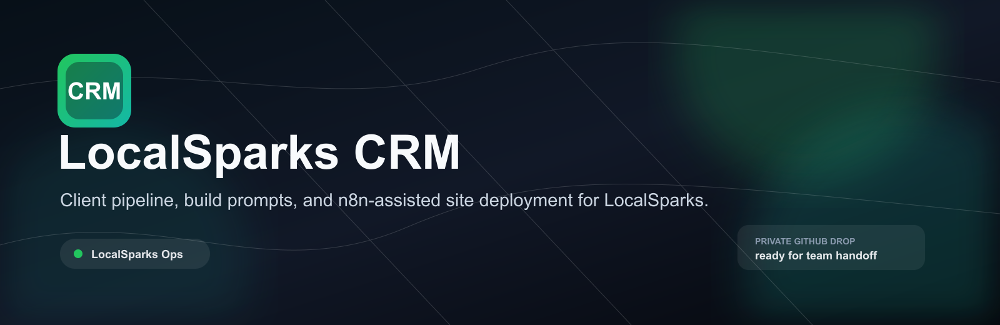
LocalSparks CRM
Client pipeline, build prompts, and n8n-assisted site deployment for LocalSparks.
localsparks-crmPublic banner and icon assets for private GitHub repositories.

Client pipeline, build prompts, and n8n-assisted site deployment for LocalSparks.
localsparks-crm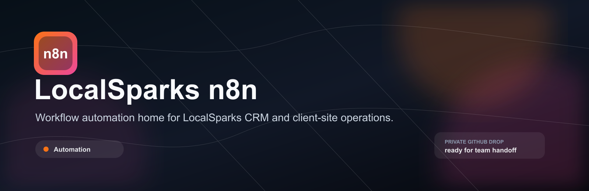
Workflow automation home for LocalSparks CRM and client-site operations.
localsparks-n8n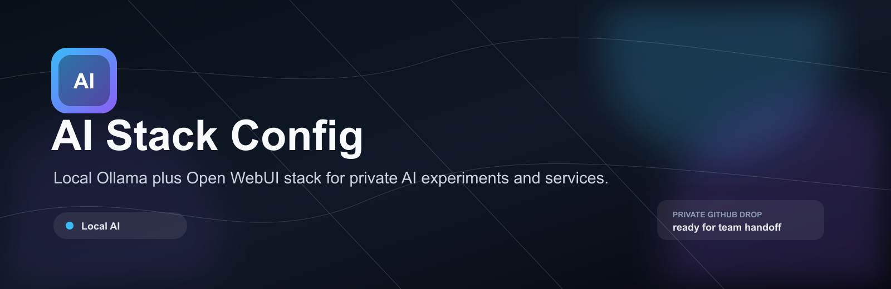
Local Ollama plus Open WebUI stack for private AI experiments and services.
ai-stack-config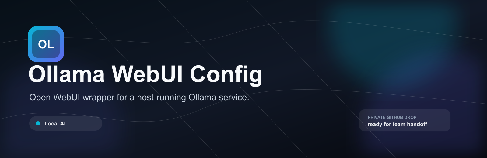
Open WebUI wrapper for a host-running Ollama service.
ollama-stack-config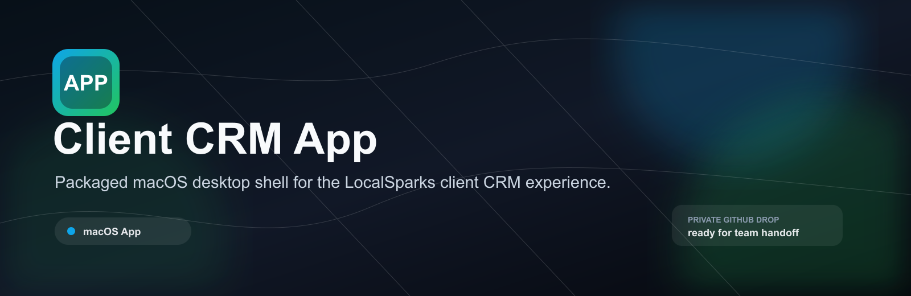
Packaged macOS desktop shell for the LocalSparks client CRM experience.
client-crm-app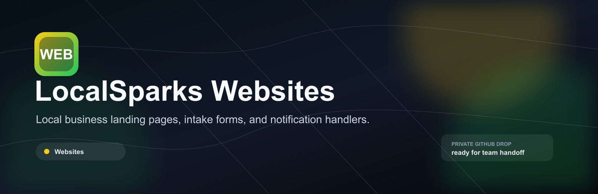
Local business landing pages, intake forms, and notification handlers.
localsparks-websites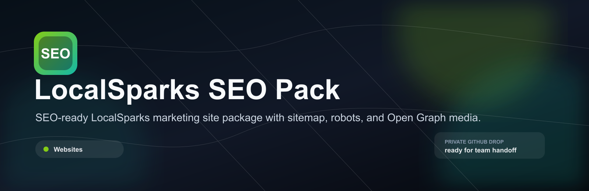
SEO-ready LocalSparks marketing site package with sitemap, robots, and Open Graph media.
localsparks-seo-pack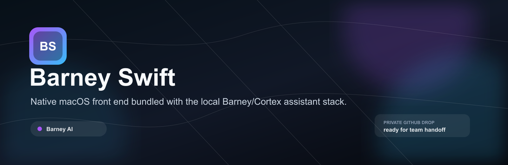
Native macOS front end bundled with the local Barney/Cortex assistant stack.
barney-swift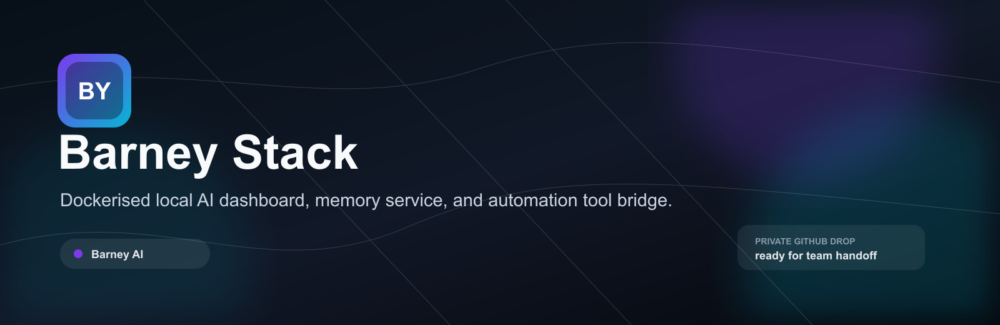
Dockerised local AI dashboard, memory service, and automation tool bridge.
barney-stack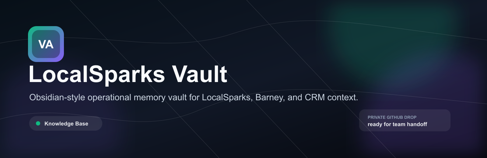
Obsidian-style operational memory vault for LocalSparks, Barney, and CRM context.
localsparks-vault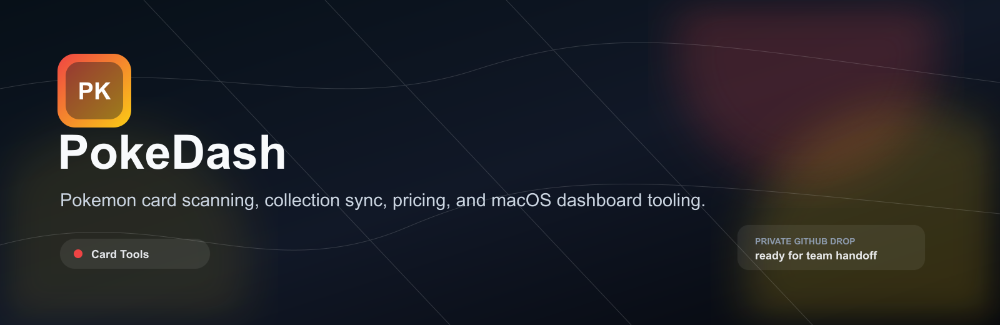
Pokemon card scanning, collection sync, pricing, and macOS dashboard tooling.
pokedash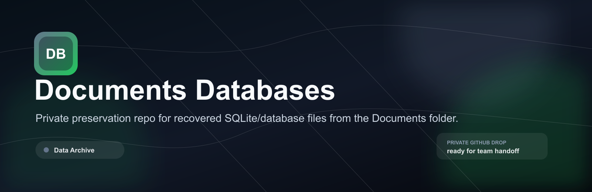
Private preservation repo for recovered SQLite/database files from the Documents folder.
documents-databases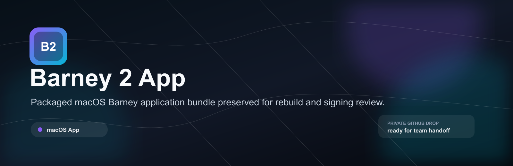
Packaged macOS Barney application bundle preserved for rebuild and signing review.
barney2-app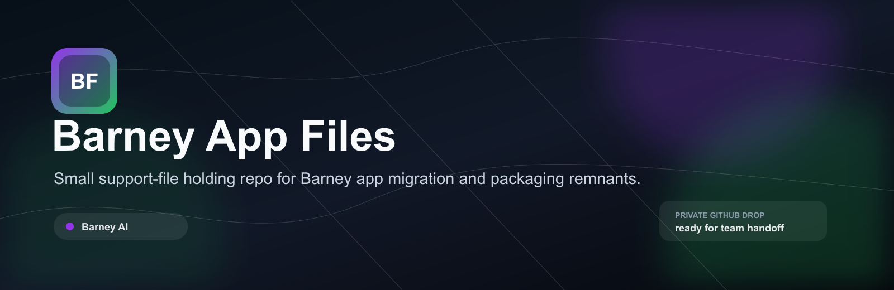
Small support-file holding repo for Barney app migration and packaging remnants.
barney-app-files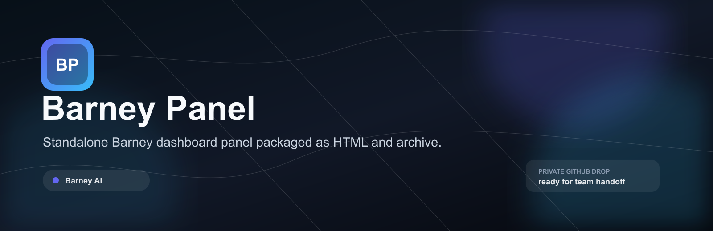
Standalone Barney dashboard panel packaged as HTML and archive.
barney-panel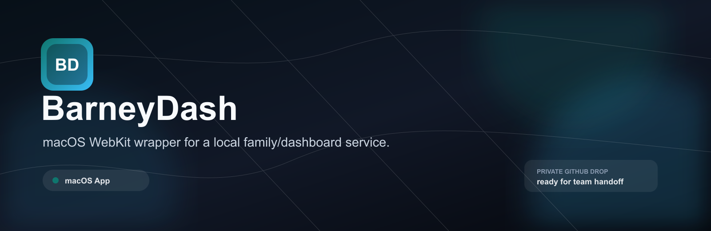
macOS WebKit wrapper for a local family/dashboard service.
barney-dash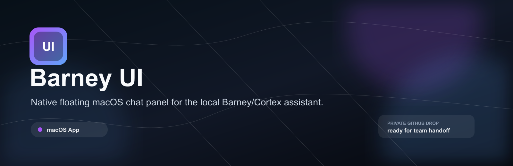
Native floating macOS chat panel for the local Barney/Cortex assistant.
barney-ui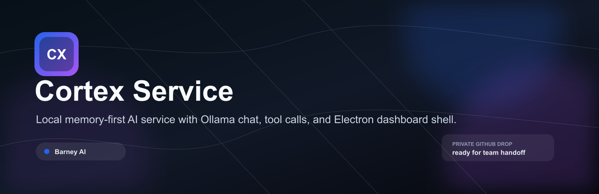
Local memory-first AI service with Ollama chat, tool calls, and Electron dashboard shell.
cortex-service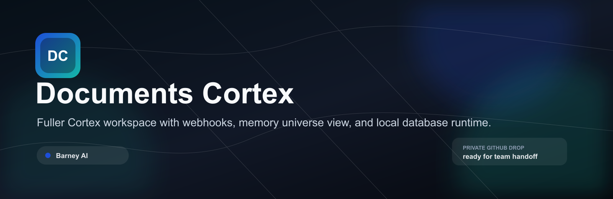
Fuller Cortex workspace with webhooks, memory universe view, and local database runtime.
documents-cortex